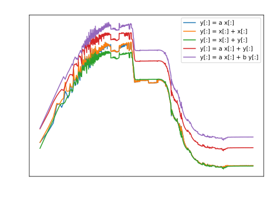
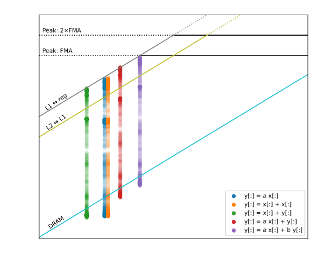
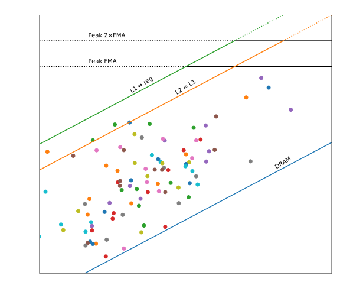

Estimating and measuring peak performance of numerical ocean model algorithms
Marshall Ward
NOAA-GFDL
March 1, 2022
Peak Performance
\[W_\text{FLOPS} = W_\text{core} \times N_\text{cores} \times f_\text{cycles}\]
| Platform | Year | Theoretical | Observed |
|---|---|---|---|
| Cascade Lake | 2019 | 2150.4 | 2145.3 |
| Volta (GPU) | 2018 | 7065.6 | 7007.3 |
But are these numbers achievable?
How we compute
- Cascade Lake
24 core × 8 (AVX512) × 2 (FMA) × 2 port × 2.8 GHz
- Volta
80 SM × 32 FP64 core × 2 (FMA) × 1.38 GHz
Cost of Business
| Platform | FLOPs | Year | Price | TDP(W) |
|---|---|---|---|---|
| Cascade Lake | 2145.3 | 2019 | $6432 | 240 |
| Volta (GPU) | 7007.3 | 2018 | $8999 | 250 |
Models
- Cascade Lake
Intel(R) Xeon(R) Platinum 8274 CPU @ 3.20GHz
- Volta
Nvidia Volta GV100 (1.38GHz)
Performance Bounds
Performance Bounds
Compute Bound
Matrix Multiplication (DGEMM)
\[\text{C}_{ij} = \sum_{k} A_{ik} B_{kj}\]\[\frac{\text{FLOPs}}{\text{byte}} = \frac{2n^3}{3n^2 \times \texttt{sizeof}(A)} = \frac{1}{12} n\]
Efficiency (work/byte) increases as problem grows
Traditional CFD
Most solvers are hyperbolic and elliptic, e.g.:
\[\frac{\partial \mathbf{u}}{\partial t} = - \mathbf{u} \cdot \nabla \mathbf{u} -\nabla p + \mathcal{F}\]\[\nabla^2 p = -\nabla \left( \mathbf{u} \cdot \nabla \mathbf{u} \right) - \nabla \cdot \mathcal{F}\]
Pressure (Montgomery potential, PV, ...) solver is a (sparse) matrix operation.
Memory Bound
Field update (DAXPY)
\[\phi_{i} = \phi_{i} + \Delta t \mathcal{F}_{i}\]\[\frac{\text{FLOPs}}{\text{byte}} = \frac{2n}{3n \times \texttt{sizeof} (\phi)} = \frac{1}{12}\]
Bandwidth cost rises in proportion to work
Ocean CFD
Hydrostatic balance eliminates elliptic step:
\[\frac{\partial \mathbf{u}}{\partial t} = - \mathbf{u} \cdot \nabla \mathbf{u} -\nabla p + \mathcal{F}\]\[p = -g \rho\]\[\frac{\partial \rho}{\partial t} = ...\]
Most barotropic solvers are also hyperbolic.
Array Performance

How these are produced
int main() {
/* ... */
start(timer);
for (r = 0; r < r_max; r++) {
for (int i = 0; i < n; i++)
kernel(i, a, b, x, y);
// An impossible branch to block loop interchange
if (y[0] < 0.) dummy(a, b, x, y);
}
stop(timer);
}
void kernel(int i, double a, double b, double *x, double *y) {
y[i] = a * x[i] + y[i];
}Apply artificially high iteration, but let the compiler construct the kernel.
Unaccounted Factors
- Pipelining
- Instruction latency
- Instruction decoder
- Variable Clock Frequency
- Depletion of registers
Roofline Modeling

\(P = I \times B_\text{mem}\)
The Roofline Model
\[P = \text{min}(P_\text{max}, I \times B_\text{mem})\]
- \(P\): Performance (FLOP/s)
- \(P_\text{max}\): Theoretical peak (FLOP/s)
- \(I\): Arithmetic Intensity (FLOP/byte)
- \(B_\text{mem}\): Memory bandwidth (byte/s) (cache, RAM, ...)
For our codes, often \(P = I \times B_\text{mem}\)
Peak Bandwidth

| Platform | BW (GB/s) |
|---|---|
| x86 (cache) | 8600 |
| x86 (RAM) | 141 |
| Volta (RAM) | 900 |
Computing Bandwidth
| Platform | Speed (GHz) | Width (B) | BW (GB/s) |
|---|---|---|---|
| x86 cache | 2.8* | 128* | 8600 |
| x86 RAM | 2.93 | 8 × 6 | 141 |
| Volta RAM | 877 | 1024 | 900 |
- AVX512 clock speed, L1 load+store, etc
x86 Cache Bandwidth
Three 64B + AGU ports, but only 2 AGU are usable
Euler Step
\[\phi^{n+1}_i = \phi^n_i + \Delta t \left( \frac{\partial \phi}{\partial t} \right)_i\]
y[i] = y[i] + a * x[i]2 FLOPs per 3×8 bytes: \(\frac{1}{12}\)
Peak Euler
| Platform | Observed | Theory | % |
|---|---|---|---|
| x86 (Cache) | 715.1 | 716.8 | 99.7 |
| x86 (RAM) | 9.36 | 11.8 | 79.3 |
| GPU | 67.3 | 74.8 | 89.9 |
Finite Difference
\[\phi^{n+1}_i = \phi^n_i + \frac{\Delta t}{\Delta x^2} \left(\phi^n_{i+1} - 2 \phi^n_i + \phi^n_{i-1} \right)\]
y[i] = a * x[i] + b * (x[i+1] + x[i-1])
x[i] = y[i]4 FLOPs (amortized) per 4×8 bytes: \(\frac{1}{8}\)
How many FLOPS?
Is it four or five operations?
\[\phi^{n+1}_i = \phi^n_i + \frac{\Delta t}{\Delta x^2} \left(\phi^n_{i+1} - 2 \phi^n_i + \phi^n_{i-1} \right)\]
y[i] = x[i] + a * (x[i-1] - 2 * x[i] + x[i+1])\[\phi^{n+1}_i = \left( 1 - 2 \frac{\Delta t}{\Delta x^2} \right) \phi^n_i + \frac{\Delta t}{\Delta x^2} \left(\phi^n_{i+1} + \phi^n_{i-1} \right)\]
y[i] = a * x[i] + b * (x[i-1] + x[i+1])This is a compiler question: Do we follow parentheses?
Diffusion Performance
| Platform | +1 | +8 | Theory |
|---|---|---|---|
| x86 (Cache) | 499.9 | 646.9 | 1075.2 |
| x86 (RAM) | 10.5 | 10.5 | 17.6 |
| GPU | 81.1 | 81.1 | 112.3 |
Prediction is significantly higher for \(I = \frac{1}{8}\) ?
Write-Allocated Diffusion
| Platform | +1 | +8 | Theory |
|---|---|---|---|
| x86 (Cache) | 499.9 | 646.9 | 716.8 |
| x86 (RAM) | 10.5 | 10.5 | 11.7 |
| GPU | 81.1 | 81.1 | 112.3 |
Write-allocate: An x86 write (y[:] =) includes a read!
Arithmetic intensity is adjusted to \(\frac{1}{12}\) (6 moves)
Diffusion Stages
| Stage | Observed | Theory |
|---|---|---|
| \(y \leftarrow a x + b (x^{-} + x^{+})\) | 1057 GF/s | 1075 GF/s |
| \(x \leftarrow y\) | 6878 GB/s | 8601 GB/s |
Copies in general tend to be suboptimal
(Although better than write-allocate)
Evaluating Model Performance
- 192 × 128 grid, 75 level
- 32 x 32 per MPI rank
- ~1.8M points / field
- 288 steps (3 day, \(\Delta t = 900s\))
- "Benchmark" configuration:
- Split barotropic
- Thermodynamic EOS
- Parameterization suite
MOM6 Performance

MOM6 Roofline

MOM6: All subroutines

Largely memory-bound, with notable exceptions
MOM6: 16x Domain

Memory-bound shift as domain size increases
Summary
- Most ocean model solvers are bandwidth-limited
- Arithmetic intensity (AI) is a predictor of performance
- CPUs benefit from modest arrays, but can tolerate larger ones
- GPUs strongly favor large arrays, and implicit (matrix) solvers
- AI can be used to strategize optimization